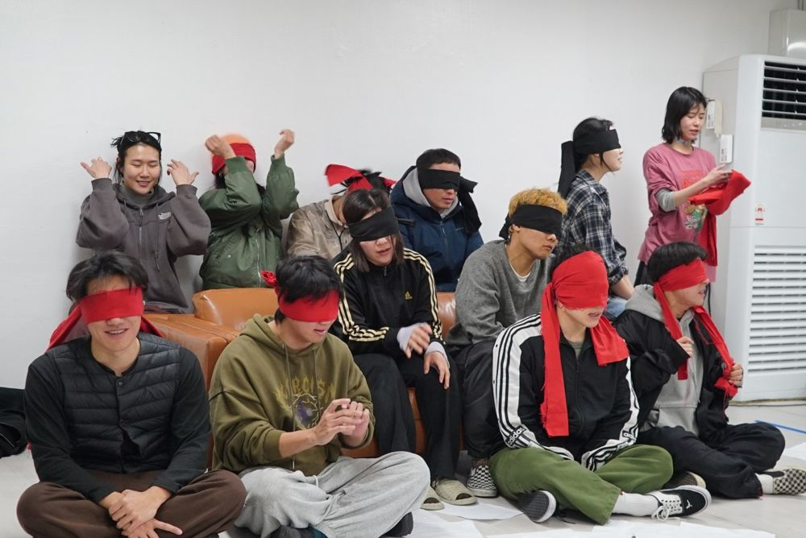

Green Pig > Archive > Fool-Run: In the Burning Darkness

Not Doing Theater: Fool-Run. A gathering to read and try out a play by Antonio Buero Vallejo together. The story begins when a new student, Ignacio, arrives at a school where blind students live as if they could see.
2026.1.24 / Sangsang Manbal Theater rehearsal room - Not Doing Theater: Fool-Run
Playwright: Antonio Buero Vallejo
Director: Ju Eungil
Cast: Ko Gyeongcheol, Kim Wontae, Kim Hyoyeong, Park Subin, Park Eunhye, Park Jeonggeun, Lee Seunghun, Lee Juhyeong, Lee Hyeri, Jung Namu, Jung Seyun, Jeon Inseong, Jung Yeonjong
Prompter: Jung Yujin
Advisor: Kang Boreum
Set design: Kim Hyerim
Costume design: Ondal
Assistant director: Jung Yujin
Filming: Ha Seongmin
Previous: When Chorok Lies, We All Clap | Next: Wrath 震怒
Back to the archive | Any work
Published 2026.11.13